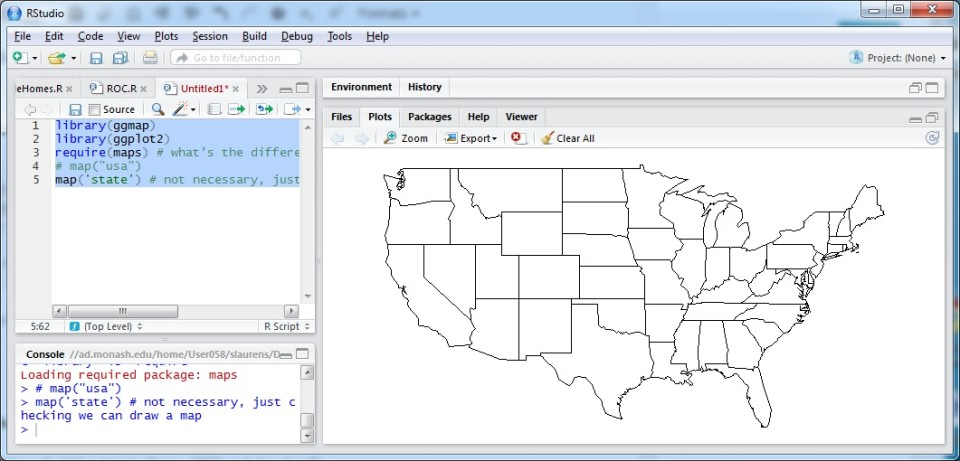
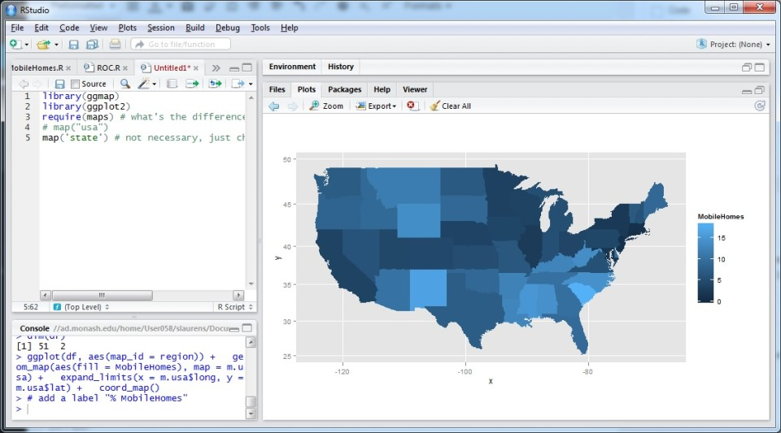

Activity: Exploring & Visualising Data using R
Data on Maps with R
You will need R and RStudio, you will also need to install the following libraries (and dependencies):
- ggmap
- ggplot2
- maps
If you are not sure how to do this and want to explore some basic knowledge about R.
DO TAKE A LOOK AT:
- Introduction to RStudio
- Introduction to R programming
- [Torfs & Brauer’s “A (Very) Short Introduction to R” [pdf]]http://cran.r-project.org/doc/contrib/Torfs+Brauer-Short-R-Intro.pdf
Step 1 Run RStudio, install libraries, try the following code (copy, paste, run):
library(ggmap)
library(ggplot2)
library(maps)
# or you can try e.g. require(maps)
# map("usa")
map('state') # not necessary, just checking we can draw a mapYou should see a basic map of the US states:

If an error appear as “Plot region too large”.
You just need to adjust the right bottom section of RStudio larger.
Step 2 Read the modified data file (state names & codes have been added).
Download the file at Household-heating-by-State-2008.csv, and put it in your working directory.
data <- read.csv("Household-heating-by-State-2008.csv", header=T)
head(data)
names(data) Step 3 Names are a bit much, simplify the one we’re interested in:
names(data)[4] <- "MobileHomes"
names(data)Step 4 Now group the Mobile Home data by State, calculating the average:
ag <- aggregate(MobileHomes ~ States, FUN = mean, data = data)Look at the paprameters of aggregate.
MobileHomes ~ Statesmeans group the Mobile Home data by StateFUN = meanmeans calculate their averages,
How many states should there be?
head(ag)
dim(ag)Not going to worry about the first ‘#N/A’ state for now, delete it if you like
Step 5 Get map data (built-in map data in ggplot2 package)
m.usa <- map_data("state") # we want the states
head(m.usa)
dim(m.usa) # more info than we needStep 6 Force our states to lowercase to match the map, keep also one column of data
df <- data.frame(region = tolower(ag$States),
MobileHomes = ag$MobileHomes, stringsAsFactors = F
)
dim(df)50 states?
Step 7 Now plot it on the map (look at all those layers…)
# Create a empty canvas
ggplot(df, aes(map_id = region)) +
# draw the grid
expand_limits(x = m.usa$long, y = m.usa$lat) +
# draw a us map, fill = MobileHomes means color the map according to MobileHomes property
geom_map(aes(fill = MobileHomes), map = m.usa) +
# fix the ratio of the x and y axises, to match a map
coord_map() 
QUESTION: Compare R with Tableau Public for data visualisation – which do you prefer and why? Consider also the data wrangling to prepare and process the data.